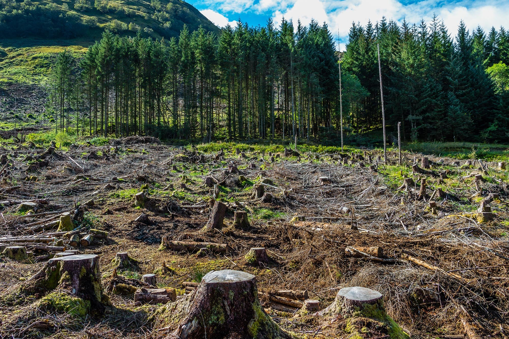

End Deforestation & Restore Degraded Forests
Forest restoration helps rebuild ecosystems, protect wildlife, and reduce the impact of climate change. Learn how replanting and conservation efforts bring forests back to life.
Learn More...

Protect Biodiversity & Natural Habitats
Biodiversity keeps our planet balanced. Discover how protecting natural habitats supports endangered species and preserves healthy ecosystems for future generations.
Learn More...
Conservation of Wildlife & Mountain Ecosystems
Mountain ecosystems are home to unique plants and animals. Explore how conservation efforts safeguard wildlife and maintain the fragile balance of high-altitude environments.
Learn More...
Sustainable Farming & End Desertification
Sustainable farming reduces soil degradation and prevents land from turning into desert. Learn how eco-friendly agricultural practices help protect fertile land and local communities.
Learn More...